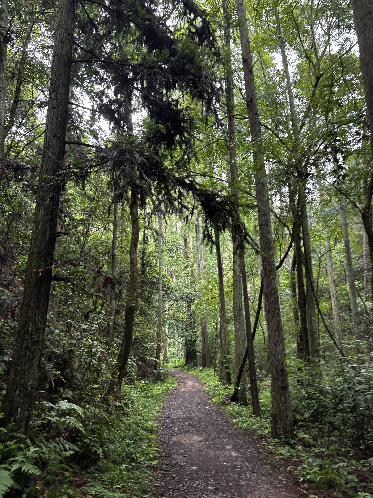
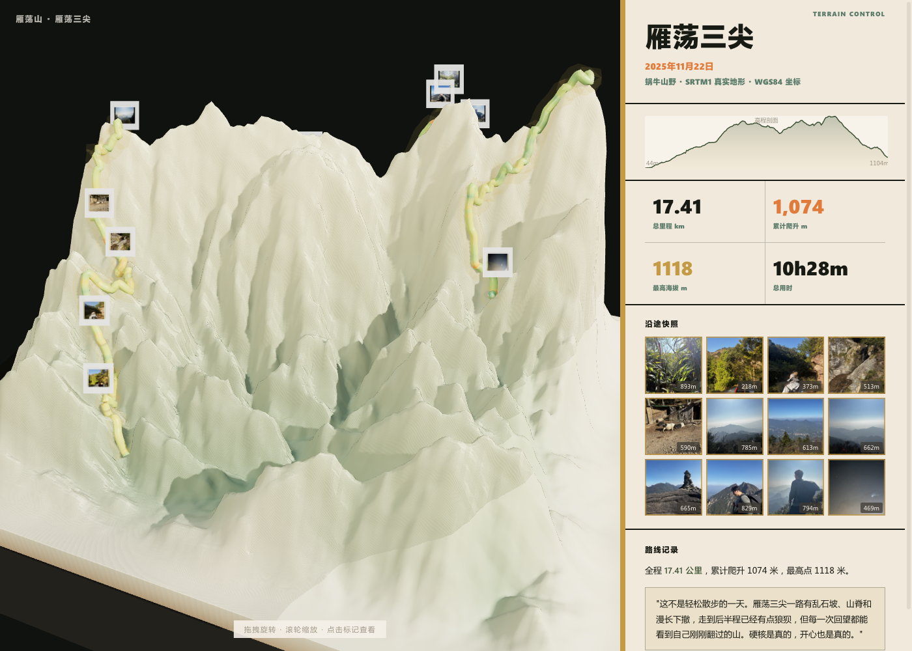

SHANYE LUJI CASE GALLERY
山野路迹
案例展厅
选择一条路线，查看对应的 3D 路迹小报、路线明信片、公众号长图、小红书九宫格和可旋转 STL 冰箱贴模型。

牧心谷
轻松、狼狈但开心的一次山野记录，包含完整网页和平面文创成果。
进入案例
雁荡山
硬核、狼狈但开心的雁荡三尖路线，收录 3D 小报、社交图和冰箱贴模型。
进入案例选择一条路线，查看对应的 3D 路迹小报、路线明信片、公众号长图、小红书九宫格和可旋转 STL 冰箱贴模型。

轻松、狼狈但开心的一次山野记录，包含完整网页和平面文创成果。
进入案例
硬核、狼狈但开心的雁荡三尖路线，收录 3D 小报、社交图和冰箱贴模型。
进入案例